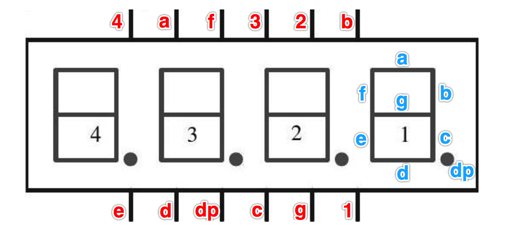

设备
- 树莓派开发板 * 1
- 四位一体数码管 * 1 (我用的是 F346AH)
- 母对母杜邦线 * 12
连线说明
必要的说明
首先上一张树莓派的引脚图
然后是数码管引脚图
一般四位一体数码管的引脚应该如下所示(未考证, F346AH 和 F346BH 是这样的)

可以看到，一共有12个引脚。但是一共有 (7+1)*4 = 32 个小 led 灯。所以从理论上来说 12 个引脚是不能够控制所有 led 的。但伟大的劳动人们智慧是无穷的，他们想出了使用 12 个引脚控制 32 个 led 灯的方法：如上图所示，四个显示区的 a,b,c,d,e,f,g,dp 共用数码管的 a,b,c,d,e,f,g,dp 八个引脚，剩下的 1,2,3,4 四个引脚来控制显示哪一个区域。大家可能会有疑问，这样不还是不能同时控制所有的 led 灯吗。没错，这种方式只能控制四个区域中的一个，但如果我们循环显示每个区域呢，假如每个区域显示 1 秒之后就全部灭掉，然后显示下一个，这样你就会看到，四个区域都能够获得显示自己的机会，只是在我们看来是亮 1 秒 暗 3 秒。但是当我们把间隔时间调小，比如调到 0.005 秒，此时人眼是无法看出来某个区域在闪，这个时候每个区域看似就都能“同时”显示了。
连线
引脚a => 26
引脚b => 19
引脚C => 13
引脚D => 6
引脚E => 5
引脚F => 11
引脚G => 9
引脚dp => 10
DIGIT1 => 12
DIGIT2 => 16
DIGIT3 => 20
DIGIT4 => 21
注意,这里我使用的是 BCM 模式, 所以 26 对应的是树莓派物理接口的 37, 19 对应的是树莓派物理接口的 35，以此类推
控制代码
1 | #!/usr/bin/python |